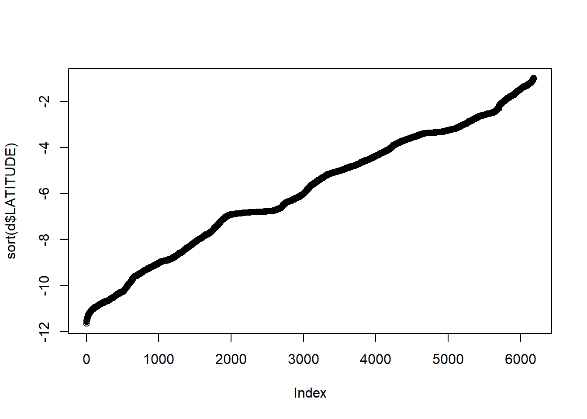

Our first exercise entails reading data from files and summarizing and combining the records. This is very common and important step; but somewhat tricky to learn. We will use the data in a file named “Operating-Health-Facilities-with-location-2014.csv” under “data” read the data in the file into a data.frame and answer all the questions by using R code only.
Replace the ___________ with the appropriate code
Feel free to use materials of Introduction to R in: http://rspatial.org/intr/.
d <- read.csv("./data/Operating-Health-Facilities-with-location-2014.csv", stringsAsFactors=FALSE)dim(d)## [1] 7071 12nrow(d)## [1] 7071ncol(d)## [1] 12colnames(d)## [1] "FACILITY_ID_NUMBER" "FACILITY_NAME"
## [3] "LATITUDE" "LONGITUDE"
## [5] "ZONE" "REGION"
## [7] "COUNCIL" "COMMON.FACILITY.HEALTH.NAME"
## [9] "ALTITUDE" "FACILITY.TYPE"
## [11] "OWNERSHIP" "OPERATING_STATUS"head(d)## FACILITY_ID_NUMBER FACILITY_NAME LATITUDE LONGITUDE
## 1 100000-9 BUPANDAGILA - SDA -2.64496 34.01009
## 2 100001-7 BUPANDWAMHELA -2.44682 32.15260
## 3 100002-5 BUPIGI -3.55117 33.69935
## 4 100003-3 BUPIGU -9.50139 33.34760
## 5 100004-1 BUPU -7.19919 39.02250
## 6 100005-8 BURERE -1.30831 33.96400
## ZONE REGION COUNCIL
## 1 Western Simiyu Bariadi Town Council
## 2 Lake Mwanza Sengerema District Council
## 3 Western Shinyanga Kishapu District Council
## 4 Southern Highlands Mbeya Ileje District Council
## 5 Eastern Pwani Mkuranga District Council
## 6 Lake Mara Rorya District Council
## COMMON.FACILITY.HEALTH.NAME ALTITUDE FACILITY.TYPE
## 1 1298 Dispensary
## 2 Zahanati 1171 Dispensary
## 3 Bupigi 1175 Dispensary
## 4 1234 Dispensary
## 5 143 Dispensary
## 6 3899 Dispensary
## OWNERSHIP OPERATING_STATUS
## 1 Faith based organization Operating
## 2 Public Operating
## 3 Public Operating
## 4 Public Operating
## 5 Public Operating
## 6 Faith based organization Operatingtail(d)## FACILITY_ID_NUMBER FACILITY_NAME LATITUDE LONGITUDE ZONE
## 7066 110843-0 MADONA -6.827267 39.23248 Eastern
## 7067 110844-8 AAR MBAGALA -6.910340 39.26977 Eastern
## 7068 110845-5 KANDAGA -4.960950 29.84394 Western
## 7069 110846-3 KALENGE -4.956860 29.87916 Western
## 7070 110847-1 MLELA -4.918070 29.85859 Western
## 7071 110848-9 MLELA -4.918070 29.85859 Western
## REGION COUNCIL COMMON.FACILITY.HEALTH.NAME
## 7066 Dar es Salaam Ilala Municipal Council Madona
## 7067 Dar es Salaam Temeke Municipal Council AAR Mbagala Clinic
## 7068 Kigoma KANDAGA
## 7069 Kigoma KALENGE
## 7070 Kigoma MLELA
## 7071 Kigoma MLELA
## ALTITUDE FACILITY.TYPE OWNERSHIP OPERATING_STATUS
## 7066 NA Health Centre Private Operating
## 7067 66 Dispensary Private Operating
## 7068 NA Dispensary Public Operating
## 7069 1035 Dispensary Public Operating
## 7070 NA Dispensary Public Operating
## 7071 929 Dispensary Public Operatingtable(d$ZONE) ##
## Central Eastern Lake
## 579 1242 1078
## Northern Southern Southern Highlands
## 1274 716 1232
## Western
## 950summary(d)## FACILITY_ID_NUMBER FACILITY_NAME LATITUDE LONGITUDE
## Length:7071 Length:7071 Min. :-11.648 Min. :29.61
## Class :character Class :character 1st Qu.: -8.009 1st Qu.:33.29
## Mode :character Mode :character Median : -5.698 Median :35.43
## Mean : -5.877 Mean :35.43
## 3rd Qu.: -3.419 3rd Qu.:37.77
## Max. : -1.004 Max. :40.42
## NA's :888 NA's :888
## ZONE REGION COUNCIL
## Length:7071 Length:7071 Length:7071
## Class :character Class :character Class :character
## Mode :character Mode :character Mode :character
##
##
##
##
## COMMON.FACILITY.HEALTH.NAME ALTITUDE FACILITY.TYPE
## Length:7071 Min. : -317 Length:7071
## Class :character 1st Qu.: 518 Class :character
## Mode :character Median : 1167 Mode :character
## Mean : 1077
## 3rd Qu.: 1388
## Max. :18804
## NA's :2316
## OWNERSHIP OPERATING_STATUS
## Length:7071 Length:7071
## Class :character Class :character
## Mode :character Mode :character
##
##
##
## plot(sort(d$LATITUDE))
x <- table(d$REGION)
names(which.min(x))## [1] "Katavi"min(x)## [1] 77names(which.max(x))## [1] "Dar es Salaam"max(x)## [1] 599x <- d$ALTITUDE[d$FACILITY.TYPE=="Clinic"]
mean(x, na.rm=TRUE)## [1] 480.79127a. Create a data.frame with four columns: ZONE, REGION, the number of facilities, and their average elevation (by REGION)
we want something like this
| ZONE | REGION | elevation | n |
|---|---|---|---|
| 1 Central | Dodoma | 1059.4 | 369 |
| 2 Central | Singida | 1355.4 | 210 |
| 3 Eastern | Dar es Salaam | 54.4 | 599 |
We can use the aggregate function. If you struggle, divide and conquer. Do what you can do first. Split the task into parts, and then combine them again later.
#Start with mean
a <- aggregate(d[, "ALTITUDE", drop=FALSE], d[, c("ZONE","REGION"), drop=FALSE], mean, na.rm=TRUE)
head(a)## ZONE REGION ALTITUDE
## 1 Northern Arusha 1542.92913
## 2 Eastern Dar es Salaam 54.40603
## 3 Central Dodoma 1059.37631
## 4 Lake Geita 1721.67273
## 5 Southern Highlands Iringa 1541.08995
## 6 Lake Kagera 1426.51852#The number of facilities
b <- aggregate(d[, "FACILITY_ID_NUMBER", drop=FALSE], d[, c("ZONE","REGION"), drop=FALSE], length)
head(b)## ZONE REGION FACILITY_ID_NUMBER
## 1 Northern Arusha 334
## 2 Eastern Dar es Salaam 599
## 3 Central Dodoma 369
## 4 Lake Geita 143
## 5 Southern Highlands Iringa 241
## 6 Lake Kagera 298a <- merge(a, b, by = c("ZONE","REGION") )Can also be done using a loop as follows:
r <- sort(unique(d$REGION))
result <- matrix(nrow=length(r), ncol=4)
colnames(result) <- c("ZONE", "REGION", "ALTITUDE", "Facilities")
for (i in 1:length(r)) {
m <- d[d$REGION==r[i], ]
result[i,1] = unique(m$ZONE)
result[i,2] = r[i]
result[i,3] = mean(m$ALTITUDE, na.rm = TRUE)
result[i,4] = length(m$ALTITUDE)
}
result <- as.data.frame(result)
head(result)## ZONE REGION ALTITUDE Facilities
## 1 Northern Arusha 1542.92913385827 334
## 2 Eastern Dar es Salaam 54.4060324825986 599
## 3 Central Dodoma 1059.37630662021 369
## 4 Lake Geita 1721.67272727273 143
## 5 Southern Highlands Iringa 1541.08994708995 241
## 6 Lake Kagera 1426.51851851852 2987b. provide appropriate column names
colnames(a)[3:4] <- c('ELEVATION', 'FACILITIES No.')
head(a)## ZONE REGION ELEVATION FACILITIES No.
## 1 Central Dodoma 1059.37631 369
## 2 Central Singida 1355.35065 210
## 3 Eastern Dar es Salaam 54.40603 599
## 4 Eastern Morogoro 633.95902 357
## 5 Eastern Pwani 132.02765 286
## 6 Lake Geita 1721.67273 1437c. sort by ZONE, REGION. See Introduction to R. Chapter 11
a <- a[order(a$ZONE, a$REGION), ]
head(a)## ZONE REGION ELEVATION FACILITIES No.
## 1 Central Dodoma 1059.37631 369
## 2 Central Singida 1355.35065 210
## 3 Eastern Dar es Salaam 54.40603 599
## 4 Eastern Morogoro 633.95902 357
## 5 Eastern Pwani 132.02765 286
## 6 Lake Geita 1721.67273 1437d. elevation should be rounded to the nearest 10 cm
a$ELEVATION <- round(a$ELEVATION, 1)7e. show the first five lines of the data.frame
head(a, n=5)## ZONE REGION ELEVATION FACILITIES No.
## 1 Central Dodoma 1059.4 369
## 2 Central Singida 1355.4 210
## 3 Eastern Dar es Salaam 54.4 599
## 4 Eastern Morogoro 634.0 357
## 5 Eastern Pwani 132.0 286#or
a[1:5, ]## ZONE REGION ELEVATION FACILITIES No.
## 1 Central Dodoma 1059.4 369
## 2 Central Singida 1355.4 210
## 3 Eastern Dar es Salaam 54.4 599
## 4 Eastern Morogoro 634.0 357
## 5 Eastern Pwani 132.0 2867f. Save “a” in a file on your disk (comma separated by values format)
write.csv(a, paste0(tempdir(),'\\test.csv'), row.names=FALSE)w <- read.csv("./data/Tanzania-All-Waterpoints-July-2015.csv", stringsAsFactors=FALSE)wa <- aggregate(w[, 'POPULATION.SERVED'], w[, 'REGION', drop=FALSE], length)
colnames(wa)[2] <- 'nwp'
wb <- aggregate(w[, 'POPULATION.SERVED', drop=FALSE], w[, 'REGION', drop=FALSE], sum, na.rm=TRUE)
library(raster)## Loading required package: spwc <- aggregate(w[, c('WATER_QUAN', 'WATERPOINT')], w[, 'REGION', drop=FALSE], modal, na.rm=TRUE)
# or
f <- function(x) names(which.max(table(x)))
wc <- aggregate(w[, c('WATER_QUAN', 'WATERPOINT')], w[, 'REGION', drop=FALSE], f)
#combine:
water <- merge(wa, wb, by='REGION')
water <- merge(water, wc, by='REGION')
head(water)## REGION nwp POPULATION.SERVED WATER_QUAN WATERPOINT
## 1 Arusha 4564 1776454 insufficient communal standpipe
## 2 Dar es salaam 1133 0 enough communal standpipe
## 3 Dodoma 3532 4239573 enough communal standpipe
## 4 Geita 1944 384 enough hand pump
## 5 Iringa 2292 108092 enough communal standpipe
## 6 Kagera 4531 572969 enough communal standpipequal <- table(w$REGION, w$WATER_QUAL)
head(qual, n=2)##
## coloured fluoride fluoride abandoned good milky salty
## Arusha 18 161 1 0 5 20
## Dar es salaam 0 0 2 0 2 176
##
## salty abandoned soft unknown
## Arusha 1 4227 131
## Dar es salaam 119 808 26| REGION | ZONE | elevation | n | nwp | POPULATION.SERVED | WATER_QUAN | WATERPOINT | coloured | fluoride | fluoride abandoned | good | milky | salty | salty abandoned | soft | unknown |
|---|---|---|---|---|---|---|---|---|---|---|---|---|---|---|---|---|
| Arusha | Northern | 1542.9 | 334 | 4564 | 1776454 | insufficient | communal standpipe | 18 | 161 | 1 | 0 | 5 | 20 | 1 | 4227 | 131 |
| Dodoma | Central | 1059.4 | 369 | 3532 | 4239573 | enough | communal standpipe | 38 | 0 | 0 | 0 | 21 | 594 | 22 | 2694 | 163 |
| Geita | Lake | 1721.7 | 143 | 1944 | 384 | enough | hand pump | 32 | 1 | 0 | 0 | 33 | 51 | 1 | 1561 | 265 |
| Iringa | Southern Highlands | 1541.1 | 241 | 2292 | 108092 | enough | communal standpipe | 3 | 0 | 0 | 0 | 0 | 27 | 4 | 2191 | 67 |
| Kagera | Lake | 1426.5 | 298 | 4531 | 572969 | enough | communal standpipe | 64 | 5 | 0 | 0 | 76 | 117 | 2 | 4066 | 201 |
| Katavi | Southern Highlands | 1162.5 | 77 | 1069 | 217 | enough | hand pump | 6 | 0 | 0 | 0 | 6 | 127 | 2 | 907 | 21 |
m <- merge(a, water, by='REGION')
q <- as.data.frame.matrix(qual)
m <- merge(m, q, by.x='REGION', by.y=0)
# or
m <- merge(a, water, by='REGION')
qq <- as.data.frame(qual)
qq <- reshape(qq, direction='wide', timevar='Var2', idvar='Var1')
m <- merge(m, qq, by.x='REGION', by.y=1)